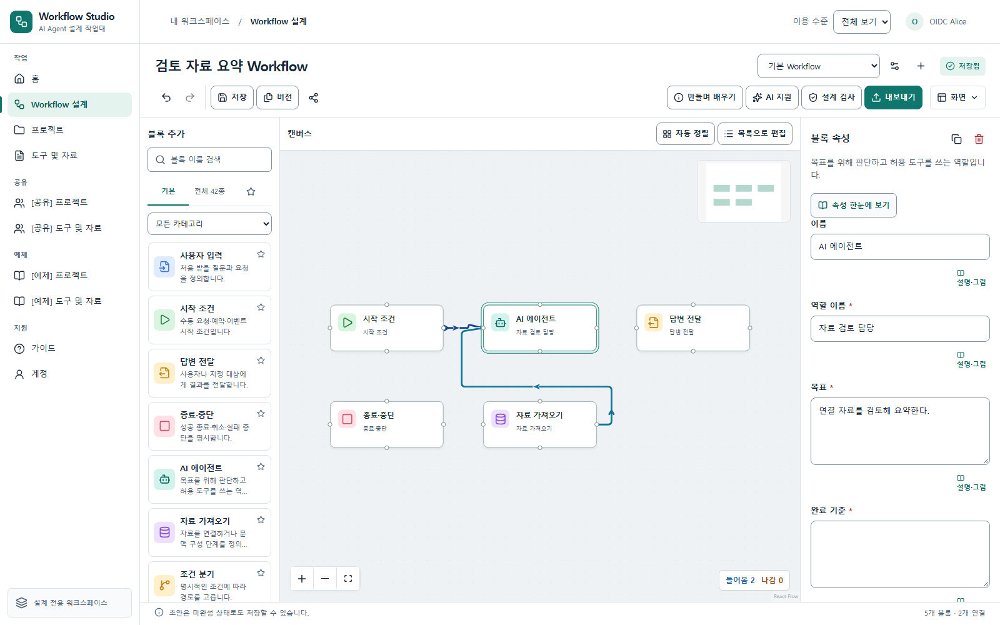

A · 실제 편집기
11월 17일 브라우저 테스트에서 캡처한 화면입니다. 42종 블록을 검색하고, 캔버스에서 연결하며, 오른쪽에서 선택한 블록의 속성을 편집합니다.

각 이미지를 누르면 원본 크기로 볼 수 있습니다.
11월 17일 브라우저 테스트에서 캡처한 화면입니다. 42종 블록을 검색하고, 캔버스에서 연결하며, 오른쪽에서 선택한 블록의 속성을 편집합니다.

시작부터 종료까지 높낮이를 달리해 배치하고, 진행·데이터·참조를 선 모양으로 구분한 그림입니다.